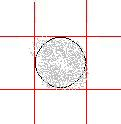

Dean Rather’s
DODGEBALL
G a m e p r o d u c t i o n f i l e
3 | Log Book |
6 | Structure Chart |
7 | Data Dictionary |
12 | Gantt Chart |
14 | Code Fragment One |
17 | Code Fragment Two |
19 | Code Fragment Three |
20 | Instillation Guide |
21 | User Tutorial |
Log Book
Chronicling of the creation of Dodgeball. From Week 1 through 10.
Week 1) Planning
This week I designed a basic layout for my game to follow, as demonstrated in the Structure Chart.
I also decided what style of game it would be, and some important game elements I will implement.
It will be a ‘dodgeball’ style game, the twist is, you control the player with the mouse. This game will require a constant 60 FPS to keep the player under the mouse at all times.
Pretty much; there’s a lot of balls bouncing around and you need to keep your player from getting hit.
Balls start off few, and over time more and more appear.
The ball’s are of random caliber, their size dictates their speed.
Power-ups are available; one to give you an overshield, one to slow down the enemies, one to make you invincible for a short time, and perhaps even one to set off a little EMP that destroys any enemies within a short radius.
At this stage the game is planned to be ‘infinate’ in that you cannot win; the goal is to live the longest and make the highest time. To ‘win’ would be to live longer than whoever’s made the previous record.
I have decided to build this game with the C++’s SDL (simple direct-media library) library, as it is extremely fast, and should allow me the speed nescicary.
I am currently setting up my C++ compiler to work with the SDL library.
Week 2) Setting up.
This week I set up SDL, created the graphics for my game, and began importing images into the SDL framework of C++.
I’ve got a window up and running, with images, and transparency, and images allocated at corresponding X and Y variables. I’ve begun setting up a class for the ball instances, and I’m currently re-organizing my code to make it easier to work with. I will soon begin getting a frame rate happening, so I can animate the game.
Week 3) Classes, Vectors, Arrays, Instances, input, animation and GameStates.
This week I set various game states (game, menu, credits, learn) come to think of it I should add ‘paused’. I set up a timer (60 FPS) by which the entire game code is limited, I then set the cursor’s image to correspond with gamestate (it’s a cursor in the menu and a man when your playing). I then created a class “Buttons” containing X, Y, W, and H variables, and instantiated the quit and play buttons. I set up the getUI fn to read mouse clicks, and adapted the menu() fn to quit if you click the close button, or go to the game if you click the play button. I also made gamestates transition smoothly between menu and the game, (ESC takes you from the game to the menu).
I then created a ball instance, and instantiated three upon setup of the game. They have random start positions (within the game’s arena), and random directions and speeds. This random aspect, at the current time, has some faults, as I just implemented it late last period. Due to setting up the timer, animation now works… decently. I’m not sure wether I’m passing data around with pointers correctly though, as the game does run slower and less consistently than I had hoped. This might also be of fault to the timer, but I’m not sure.
I don’t yet have any means of printing text or outputting textual data, so troubleshooting is currently very difficult.
Week 4) Physics
This week I implemented Physics, making each individual ball bounce off the arena boundaries accurately. I also adjusted the ball’s random positioning and direction so they appear in more random positions and move in a more random movement. (They used to be running along permanent 45 degree angles, now it is constantly between about 46 and 70.) I have begun implementing Pythagoras’s theorem of the length of a hypotenuse to find distance from the ball’s to the main character. I’ve also begun implementing music
Week 5) Alternative Sound Library
I didn’t like the SDL_Mixer library as I didn’t have the option to pause MIDI files (Like the one I’m using as the background music) So I did some research, found that an extremely professional sound library FMOD, was free to use for any game that wasn’t being sold. So I downloaded, installed, and learnt to use it, and got it working pretty well.
FMOD is also the sound library used for some professional games, such as World of Warcraft. But since then I’ve decided against using it, and I am going to revert back to SDL_Mixer.
I have begun writing a data dictionary to record all of my variables.
Week 6) Completion of data dictionary, beginning to clean up files
There were far too many lines in the one main.cpp file (over 1200) so I decided if I were to break it up into separate .cpp files, for each major part of the code (global variable declreations, video functions, maths functions, misc functions etc.)
I also finished the data dictionary, there were about 150 variables at the time. I will keep the dictionary updated as I continue programming of my game.
I have a deadline of Tuesday next week to have a functional demo ready for some people.
Week 7) Demo Preperation
I spent a lot of time this week preparing the game to be displayed as a playable demo. It went along without too many problems, I got some basics like a primitive 3-hit lives system happening.
I didn’t do much else this week as I was preoccupied with other work, although I did learn how to read and write to notepad files, which I may use to make my own Scoreboard, which has, all along, been my plan for completion of this game. (IE to win, you beat the highest score).
Week 8) Score saving system
I spent pretty much the whole week working on a program (which was to be a set of functions to use in my game) which opens a notepad file, reads the high scores from it, and saves new high scores over it. I got a lot of it working, but in it’s current stage, it’s far too buggy to implement into the game.
Week 9) Fixing some things
A lot of work needs to be done since implementing the game over thing. Bugs are popping up everywhere, and I have stopped actually making progress on the project to go back and iron out a couple bugs. Needing to split up the code into lots of other files is looking like a very important thing to do.
Week 10) Still fixing things
I’ve fixed the music, I’m working on the game over thing, and I’m just about to cut this code up once and for all, I was having troubles messing around with it before, but I’ve got a proper tutorial on it right now and will abide by this for instruction.
Structure Chart
The following structure chart, created on day 1, outlines the basis of structure I planned
my game functions and operations about.
Data Dictionary
The following data dictionary outlines all pieces of data in my project at time of writing. It has the data type, for example numbers (integer) words (string) or yes/no (Boolean).
It also contains what they are initiated to (granted their not initiated to some complex calculation; which some of them are.)
Globals | |||
Name | Type | Description | Initialised to |
WINDOW_WIDTH | Constant Integer | Width of the window (pixels) | 800 |
WINDOW_HEIGHT | Constant Integer | Height of the window (pixels) | 600 |
WINDOW_DEPTH | Constant Integer | Bit Depth of the window | 32 |
FPS | Constant Integer | Max Frames Per Second of the game (refresh rate) | 30 |
FRAME_RATE | Constant Integer | miliseconds (second/1000) per frame | 1000/FPS |
BALLD | Constant Integer | Diameter of the ball | 30 |
CURSORD | Constant Integer | Cursor Diameter | 64 |
ARENAX | Constant Integer | game arena top-left X coord | 46 |
ARENAY | Constant Integer | game arena top-left Y coord | 53 |
ARENAW | Constant Integer | game arena width | 583 |
ARENAH | Constant Integer | game arena height | 522 |
RBARX | Constant Integer | Right bar X coord | 665 |
RBARY | Constant Integer | Right bar Y coord | 17 |
RBARW | Constant Integer | right bar width | 787-RBARX |
RBARH | Constant Integer | right bar height | 585-RBARY |
MAXSPEED | Constant Integer | maximum speed a ball may move (pixels/frame) | 9 |
MINSPEED | Constant Integer | minium speed a ball may move (pixels/frame) | 7 |
MANW | Constant Integer | mans width | 36 |
MANH | Constant Integer | mans height | 54 |
FONTSIZE | Constant Integer | font's size | 20 |
GRIMFRAMES | Constant Integer | frames in the grimace 3d clip | 19 |
STARTBALLS | Constant Integer | amount of balls at the start | 5 |
NEWBALLDELAY | Constant Integer | delay between ball creation | 3 |
FULLSCREEN | Constant Boolean | wether the game is to be run in fullscreen | FALSE |
MENU | Constant Integer | a variable name to reference a game state | 1 |
GAME | Constant Integer | a variable name to reference a game state | 2 |
LEARN | Constant Integer | a variable name to reference a game state | 3 |
CREDITS | Constant Integer | a variable name to reference a game state | 4 |
QUIT | Constant Integer | a variable name to reference a game state | 5 |
STATE | Integer | The varable used to refer to the game states. | MENU |
mouseX | Integer | Mouse's X coord | 0 |
mouseY | Integer | Mouse's Y coord | 0 |
origTime | Integer | original system time in ms (second/1000) | 0 |
Timer | Integer | ms since orig time | 0 |
LastUpdate | Integer | time in ms the screen most recently refreshed | 0 |
GrimaceFrame | Integer | frame grimace 3d film is currently at | 0 |
Seconds | Integer | Seconds since the game started (timer*1000) | 0 |
GameSeconds | Integer | Seconds of unpaused gameplay | 0 |
OldFrames | Integer | number of frames rendered in the previous second | 0 |
Frames | Integer | current frame being rendered this second | 0 |
Hit | Integer | number of times the man has been hit | 0 |
lastBallSpawn | Integer | When the last ball was spawned (in seconds) | 0 |
middleness | Integer | how close the player is to the middle | 0 |
score | Integer | players score | 0 |
Balls | Integer | number of balls currently onscreen | 0 |
isRunning | Boolean | if the current state is running | TRUE |
paused | Boolean | if the game is paused | FALSE |
keyUp | Boolean | if the "up" key is being held down | FALSE |
keyDown | Boolean | if the "down" key is being held down | FALSE |
keyLeft | Boolean | if the "left" key is being held down | FALSE |
keyRight | Boolean | if the "right" key is being held down | FALSE |
keyReturn | Boolean | if the "return" key is being held down | FALSE |
keySpace | Boolean | if the "space" key is being held down | FALSE |
keyM | Boolean | if the "m" key is being held down | FALSE |
keyEsc | Boolean | if the "esc" key is being held down | FALSE |
mouseDown | Boolean | if the mouse button is being held down | FALSE |
slowBalls | Boolean | if the slowBalls state is active | FALSE |
toggler | Boolean | a variable to help toggle booleans | FALSE |
musicOn | Boolean | if the music is on | FALSE |
mute | Boolean | if the music is muted | FALSE |
imageNames[] | Constant String Array | Names of game images | |
imageCount | Constant Integer | Number of game images | # of images |
soundNames[] | Constant String Array | Names of game sounds | |
soundCount | Constant Integer | Number of game sounds | # of sounds |
Class Variables - "Man" Class | |||
Name | Type | Description | Initialised to |
Global | |||
visible | Boolean | if the man is to be rendered this frame | TRUE |
invulnerable | Boolean | if the man should detect collisions with enemies | FALSE |
health | Integer | How much health the man has | 3 |
invulStart | Integer | Time at which invulnerablility began (in Game Seconds) | 0 |
invulTimer | Integer | Time the man has been invulnerable for (in seconds) | 0 |
slow | Integer | Time that slow can be called for | 5 |
inverters | Integer | Number of inverters left | 3 |
emp | Integer | number of EMP charges left | 3 |
Class Variables - "Ball" Class | |||
Name | Type | Description | Initialised to |
Global | |||
X | Integer | X Position | Random |
Y | Integer | Y Position | Random |
S | Integer | Speed | Random |
T | Integer | Time at which it was created (In game seconds) | GameSeconds |
dx | Integer | X Direction (Horz) | Random |
dy | Integer | Y Direction (Vert) | Random |
flashing | Boolean | if the ball should be flashing | TRUE |
visible | Boolean | if the ball should be rendered this frame | FALSE |
beenHit | Boolean | if the ball has been hit | FALSE |
Ball() | |||
tolerance | Integer | how inaccurately the about() fn can make the ball's direction | 70 |
moveBall() | |||
tdx | Integer | Temporary horz direction | dx |
tdy | Integer | Temporary vert direction | dy |
tX | Integer | Temporary X coord | X + tdx |
tY | Integer | Temporary Y coord | Y + tdy |
Class Variables - "Button" Class | |||
Name | Type | Description | Initialised to |
Global | |||
x | Integer | X Coord | |
y | Integer | Y Coord | |
w | Integer | Width | |
h | Integer | Height | |
Function - beginSDL() | |||
Name | Type | Description | Initialised to |
r | Integer | Red value used when referencing transparent colour | 255 |
g | Integer | Green value used when referencing transparent colour | 0 |
b | Integer | Blue value used when referencing transparent colour | 255 |
Function - drawImage(SDL_Surface *img, SDL_Surface *dest, int x, int y) | |||
Name | Type | Description | Initialised to |
x | Integer | X coord to draw image to | |
y | Integer | Y coord to draw image to | |
Function - DisplayText(string text, int x, int y) | |||
Name | Type | Description | Initialised to |
text | String | Text to be written to screen | |
x | Integer | X coord to write it to | |
y | Integer | Y coord to write it to | |
Function - Random(int X, int Y) | |||
Name | Type | Description | Initialised to |
X | Integer | minimum random result | |
Y | Integer | maximum random result | |
Function - outOfBounds(int x, int y) | |||
Name | Type | Description | Initialised to |
x | Integer | X coord to check if out of bounds of arena | |
y | Integer | Y coord to check if out of bounds of arena | |
Function - wordNum(int num) | |||
Name | Type | Description | Initialised to |
num | Integer | number to be returned as a string | |
origNum | Constant Integer | original number passed to function | |
sSign | String | Sign of number (Positive or Negative) | |
sNumber | String | Final Number | |
sHundred | String | Hundreds | |
sThousand | String | Thousands | |
sMillion | String | Millions | |
sBillion | String | Billions | |
saNums[10] | String Array | Array of written numbers zero - nine | |
saTens[8] | String Array | Array of written tens, Twenty - Ninety | |
Function - updateScore() | |||
Name | Type | Description | Initialised to |
oldScore | Integer | original score (before increasing it) | score |
newScore | Double | new score | |
tempHit | Integer | temporary number of hits | Hit |
fraction | Double | a fraction used in calculating the score | |
Function - printDetails() | |||
Name | Type | Description | Initialised to |
H | Constant Integer | gap between X coords of each written line | |
N | Integer | Number of lines written | 0 |
Function - toggle(bool option) | |||
Name | Type | Description | Initialised to |
option | Boolean | The option being toggled | |
Function - updateTimer() | |||
Name | Type | Description | Initialised to |
tempSec | Integer | Temporary holder of number of seconds | Seconds |
Function - abs(int x) | |||
Name | Type | Description | Initialised to |
x | Integer | number that we want to get the absolute value of | |
Function - distance(int X1, int Y1, int X2, int Y2) | |||
Name | Type | Description | Initialised to |
X1 | Integer | X coord of first location | |
Y1 | Integer | Y coord of first location | |
X2 | Integer | X coord of second location | |
Y2 | Integer | Y coord of second location | |
distance | Integer | distance between two locations | |
Function - square(int x) | |||
Name | Type | Description | Initialised to |
x | Integer | number to be squared | |
Function - about(int num, int tolerance = 10) | |||
Name | Type | Description | Initialised to |
num | Integer | number to find about the same of | |
tolerance | Integer | how inaccurate to get (%) | 10 |
fraction | Integer | "tolerance" percent of num | |
min | Integer | min number to return | |
max | Integer | highest number to return | |
Function - drawScreen() | |||
Name | Type | Description | Initialised to |
oldSeconds | Integer | Current seconds at the time | |
newSeconds | Integer | Current seconds at the time (which is after waiting) | |
Gantt Chart
Code FragmentsHere are some code fragments!
The following fragment of code dwells deep within the moveBall() function of my Ball class, and therefore within every instance of a ball in the game at any given time. Whenever the main function tells a specific ball to move, it calls that ball’s moveBall() function, which eventually run this piece of code.
This piece of the moveBall() function checks to see wether the ball is colliding with the main character or not.
CODE FRAGMENT ONE
if (GameSeconds - T > 1 && !man.invulnerable || GameSeconds > 1)
{
flashing = false;
//get distance from man
/*
int d = distance(mouseX, mouseY, X, Y);
if (d <= (BALLD/2)+(MANW/2))
*/
if (X+BALLD > mouseX && X < mouseX + MANW &&
Y+BALLD > mouseY && Y < mouseY + MANH)
{
Hit ++;
man.invul(1);
beenHit = true;
}
}
In the first line, it runs an if clause. If the statements inside the (parenthesis) on the first line equate to false, it skips the code encapsulated between the open brace ( { ) on the next line, and the close brace ( } ) on the last line, essentially skipping this entire chunk of code. Why might I want the ball not to check if it’s hitting the player? One reason, the reason to the left of the or ( || ) statement, is if GameSeconds – T > 1, in other words, if this ball has been in the game for less than a second. (T is the time in game seconds that the ball was initiated). If the ball has been in the game for less than a second, it would be pretty slack to have the player get hit by it! But it will only bother with this if the man isn’t invulnerable, thus the and (&&) !man.invulnerable, ! meaning not. The other reason I might not want this chunk of code to execute is explained on the other side of the or ( || ) statement, and that is if the game has been running for less than a second itself. To have the player get hit straight away would be slack also. That about sum’s up the first line of this code fragment.
The is a Boolean value inside each ball to signify wether the ball should be flashing (they flash if their not harmful, similar to how the main player flashes if he’s unharmable). The first line run in the case that this ball is in fact harmful, makes sure this variable, is set to false. So the ball is no longer flashing.
The next line, beginning with the remark ( // ) statement, identifies that the rest of that line is not to be read by the computer, and is for the coder’s eyes only, it’s pretty much just a little comment to myself, explaining what the next piece of code is for. “Get Distance from man” it says, which is exactly what the two lines between the /* and */ markings were supposed to do. Using a distance(x1,y1,x2,y2) function I created, which finds the distance between two points. In this case the distance between the XY coord of the mouse (and subsequently the main character) and the XY coord of this particular ball. The next line takes this distance, and see’s wether it’s less than the combined radii of the man and the ball, (which would of course mean the two are too close to not be touching. – and thus, detecting a collision)
But
I didn’t like that method of collision detection, because it was more processor intensive, and less sensicle than the one I did chose to go with. That’s why those two lines are commented out using the /* and */ functions, which, much like the // function, hide the code form the compiler, so it isn’t actually read or used.
The method of collision detection I did use on the next line (which for simplicity of reading’s sake, I’ve broken into two lines) is commonly referred to as “Box Collision” because if you were to graph what each piece of the IF statement is checking, you’d make two boxes, and see if they overlap. As you can see, this IF statement checks four different possibilities, and if each and every one of them is true, it continues to execute the encapsulated code between the next {bracers}. This if clause will equate to true, and fun that code, if an imaginary box around this particular ball is overlapping an imaginary box around the main character.
The if x+balld > mousex query checks to see wether the x position of the ball’s right border is greater than the x position of the mouse. | |
Then the if x < mousex+manw query checks to see wether the x position of this ball is less than the left border of the man. If both of the above are true, the ball would either be directly above, below, or on top of the ball. | |
Similarly, if y+balld > mousey, then we narrow the possibilities down one more piece, and then | |
If y < mousey + manh, then the only places it could be would involce an overlap with the ball, and thus, we have a collision. |  |
If the above four query’s return true, the man is hitting the ball, and thus, we need to like, remove some health and stuff like that. All the stuff you’d expect to have happen if you get hit.
First, we increase the global variable which keeps count of how many times the player has been hit, then we decriment the health variable stored within the man, then we call the invulnerablility function within the man, passing it a value of 1, which is how many seconds we want him to become invulnerable for (because no one likes getting hit twice in a row), and then we set this ball’s beenHit variable to true, so it kills itself off.
If of course, that if clause (checking wether the ball was touching the man or not) did not return true, and therefore, the man was not hitting the ball, it skips all of the encapsulated code, taking it to the bottom of the fragment of code, where there is nothing left, so therefore continuing on with whatever code comes next.
CODE FRAGMENT TWO
The following code fragment is the entirety of the (current) menu function. There is a global variable called STATE which is set to either of the global variables MENU, QUIT, GAME, etc. if the state is set to MENU, then this function is the only thing that the main loop will call. And all the MENU function does, is return the new state, either QUIT, or GAME. (Or LEARN or CREDITS – once I get those functions done up). STATE is set to be the result of the menu() function. Which, of course, will be the new state.
int menu()
{
while (true)
{
getUI();
if ((Quit.inBounds(mouseX, mouseY) && mouseDown))
return QUIT;
if (Play.inBounds(mouseX, mouseY) && mouseDown || keyReturn)
return GAME;
drawScreen();
}
}
Once the menu() function is called, we immediately enter a while(true) loop, which is an infinite loop, which would never end, and would repeat forever, as quickly as possible, if we didn’t otherwise “return” out of the loop – using a “return” clause – which is what I do. So that solves that ‘problem’.
The first line runs the getUI(); function, which reads user input, and alters variables accordingly. It sets mouseX and mouseY to the mouse’s X and Y cords, it also changes mouseDown and keyReturn to either true or false, depending on wether the mouse is being held down, and wether the return key is being held down. (it also changes a vast array of other variables, but none of them are used in this function.
The next line, the if query, checks to see if the player has clicked on the Quit button. (the little X up the top right). The Quit button’s boundary’s are defined within the ‘Quit’ instance of the ‘Button’ class. The ‘Button’ class contains a function called ‘inBounds’ which checks to see wether certain coordinates are within the boundaries of that instance of the class. So by calling if Quit.inBounds(mouseX, mouseY), we are checking to see if the mouse’s X and Y cords are both within boundaries of the Quit button (using a similar box collision/overlap method to the ball. The difference being the ball collision algorithm checked if two boxes were overlapping, the check within the Button class juch checks a box up against one set of cords.). if the mouse is hovering above the quit button, AND if the mouse button is being held down, then it returns QUIT to be the new STATE.
The next two lines cover the “Play” button. Which takes you from the menu into the game, by which I mean, returns GAME to be the new STATE. The first bit of the if is the same as the quit button, but then we’ve got OR if keyReturn. So that means set the state to be GAME if they click the button, OR if they return key variable is set to true. Which is course corresponds to wether the player has hit the return key or not. So by adding this little piece of code I have created a keyboard shortcut to get from the menu straight into the game. Which is a little silly if you think about it considering the whole idea of this game is to give your mouse a real workout, and if they couldn’t be bothered to hit the Play button, their probably not going to go too well in the game to begin with…
If neither of the above IF query’s returned true, and therefore neither of the RETURN caluses were called, then we’re still in the loop. So while we’re here, we may as well call the drawScreen() function, which will update the graphical representation of where the mouse is at. It also (using the same button.inBounds member function of the button family) checks to see wether the mouse is hovering over a button, and if so, draws the hovering over button image, instead of the not hovering over button image. The loop continues until one of the IF conditions is met.
CODE FRAGMENT THREEThe Following Code Fragment is a rather complex piece of code, it loads images into the game using rhe SDL_LoadBMP() function. Which takes the name and location of a BMP image, for eg “data/readme-images/arena.bmp” and gives it a name you can use in the game. It also uses the SDL_MapRGB(); function to make make them transparent.
int r = 255,
g = 0,
b = 255;
for (int i = 0; i < imageCount; i++)
{
string location = "data/readme-images/" + imageNames[i] + ".bmp";
img[imageNames[i]] = SDL_LoadBMP(location.c_str());
SDL_SetColorKey(img[imageNames[i]], SDL_SRCCOLORKEY,
SDL_MapRGB(img[imageNames[i]]->format, r, g, b));
}
The first line, (and although its read by us as three lines, its read by the compiler as only one line, because it only has one “ ; “ which signifies the end of a line in most cases.) anyways, it sets the integer variables r, g, and b, to 255 (which in HEX - which is what the colour codes are referred to – is the highest possible colour), 0, (which is the lowest) and (255). A colour of 255, 255, 255 would be white, 0, 0, 0 would be black, 255, 0 , 0, would be red, and 0, 255, 0 would be green, etc, etc, etc. so 266, 0 , 255 is an ugly pink colour which – by convention, is never used in games, and will always be converted into transparent parts of the image by the graphics processor.
Installation Guide
Instillation:
To prevent unwanted many copies being made of this game, especially in it's current Beta form, you may not "install" the game as such, but you may run it from the disk. To play Dodgeball, just run one of the shortcuts in this same folder.
Full Screen is suggested, for better performance, and generally a better gameplay experience.
System Requirements:
This game - current Beta version - doesn't actually regulate frame rate's very well. so unfortunately, your system's performance will make a huge difference to game performance.
The bare mimimum would be a 600x800 video resolution compatible video card with about 32 megabytes of video memory, a 16X CDRom Drive, and a 550 mhz processor, with about 128 megs of RAM.
Sugested specifications, a 128 meg video card with a 24x CD Rom drive, a 1 ghz processor, and about 512 meg RAM.
User Tutorial
How to play the game!!
Ok, so you’ve got it installed, you’ve opened it up, and you don’t know how to play.
It’s a very intuitive game for the basics, but some of the more advanced power-ups and such you need to learn what keys their set to.
For a tutorial, just click “How to Play” on the main menu, and it will take you through the tutorial. Which has not been made yet and will not be in the bundled version with this whitepaper.
Presuming your running an early version, and the user tutorial is not in game yet, you can use this one now!
Simply put – the aim of the game is to live as long as you can, make as many points as possible, and beat the previous high score to win!
There are lots of tips and tricks, as well as some helpful power-ups you can use along the way. … at the time of writing, none of these exist yet. Well properly anyway.
To get out of the way of the balls, control the main character using your mouse.
That’s the basics.
To play more advanced, and get some real points, you’ll notice that if you hide around the corners, you hardly score any points at all – the closer you are to the centre, the more points your scoring!
BONUS PICKUPS:
Extra Lives. (max 3)
Extra Explosives. (max 3)
ADVANCED CONTROLS:
To use your SLOW MOTION power, hold the space bar.
To explode a BOMB, click the mouse.
To magically REVERSE TIME, hold right-click.
- -